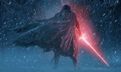

Os Sith, coletivamente chamados de Ordem Sith, eram uma ordem de usuários da Força que se utilizavam do lado sombrio da Força para ganhar poder pela galáxia. Os Sith eram antigos inimigos da Ordem Jedi e lutaram inúmeras guerras contra a Ordem por milhares de anos. A Irmandade dos Sith ou Irmandade Sith foi criada um grupo de Cavaleiros Jedi caídos, liderados por Exar Kun que rompeu com a Ordem Jedi para estudar técnicas Sith. Durante a Grande Guerra Sith, eles receberam a fidelidade de Krath e dos Mandalorianos. O Código Sith, conhecido como Qotsisajak na língua Sith, era o mantra que reforçava as crenças centrais da Ordem Sith. Foi considerado o equivalente do lado sombrio ao Código Jedi, e foi escrito pela primeira vez no planeta Korriban em 6.900 ABY pelo Jedi herege Sorzus Syn.


